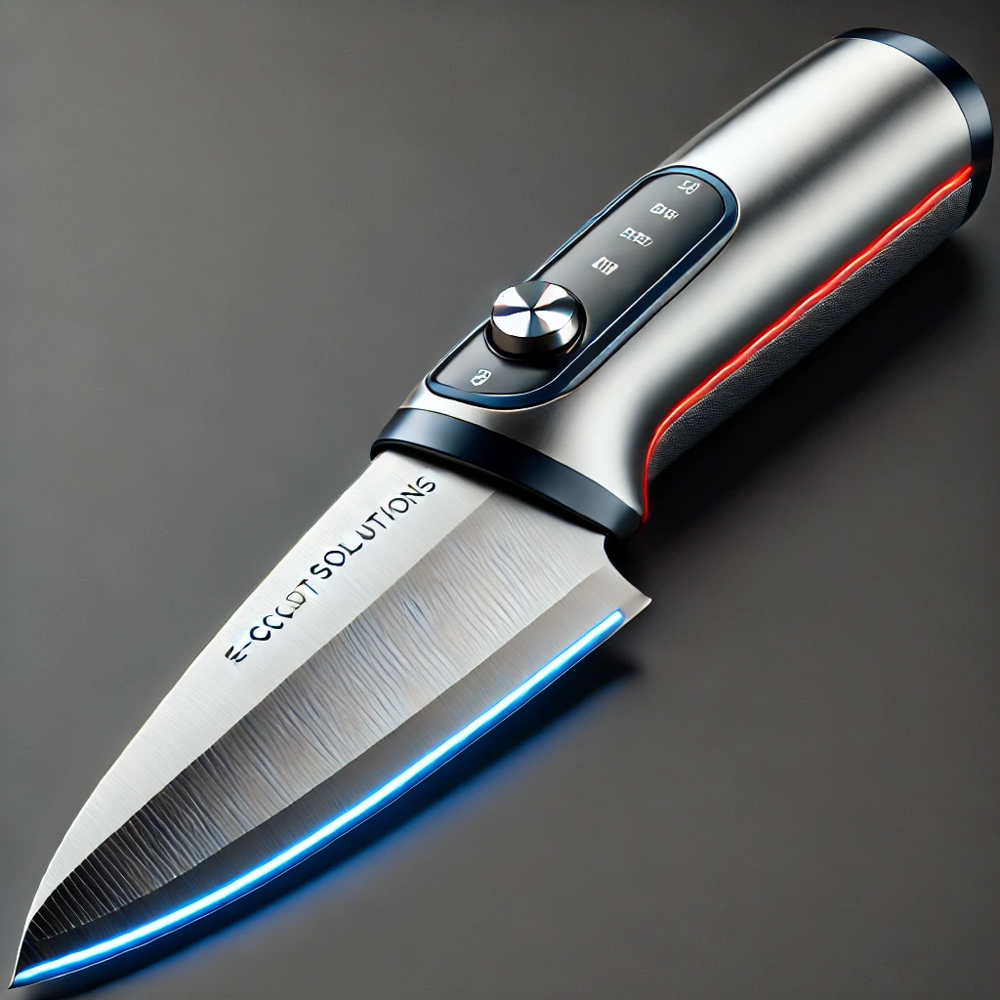

Product of the Week

This week, we're proud to feature the **E-Cut Precision Knife**. Perfect for all your culinary needs, this electric knife offers unmatched precision with its titanium-coated blade, ergonomic handle, and long-lasting battery. Get it now for only $49.99!
Customer Guarantee
At E-Cut Solutions, we stand by the quality of our products. Every electric knife comes with a **two-year warranty**, ensuring satisfaction with every slice. Whether you're carving a turkey or slicing bread, our knives deliver dependable results every time. We guarantee your satisfaction or your money back!